워십라이브 교회 자막 풀패키지 구독료 부담 없는 영구 라이선스 제공!
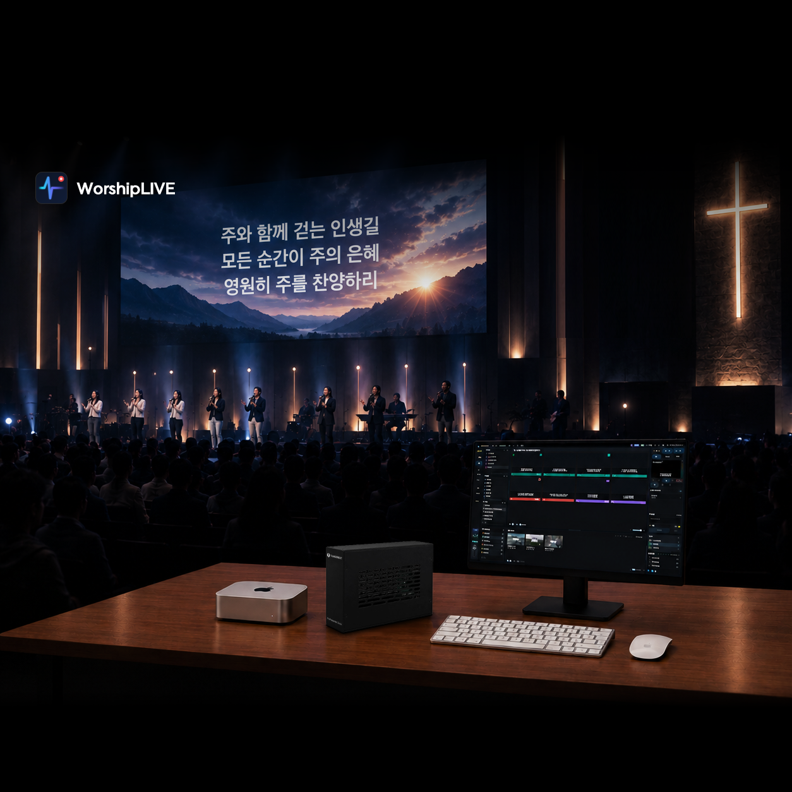
ㅣ
워십라이브 교회 자막 풀패키지 영구사용 라이선스
워십라이브 패키지는 Mac Mini를 포함한 올인원 구성으로, 설치부터 운영까지 하나의 시스템으로 편리하게 관리할 수 있습니다.
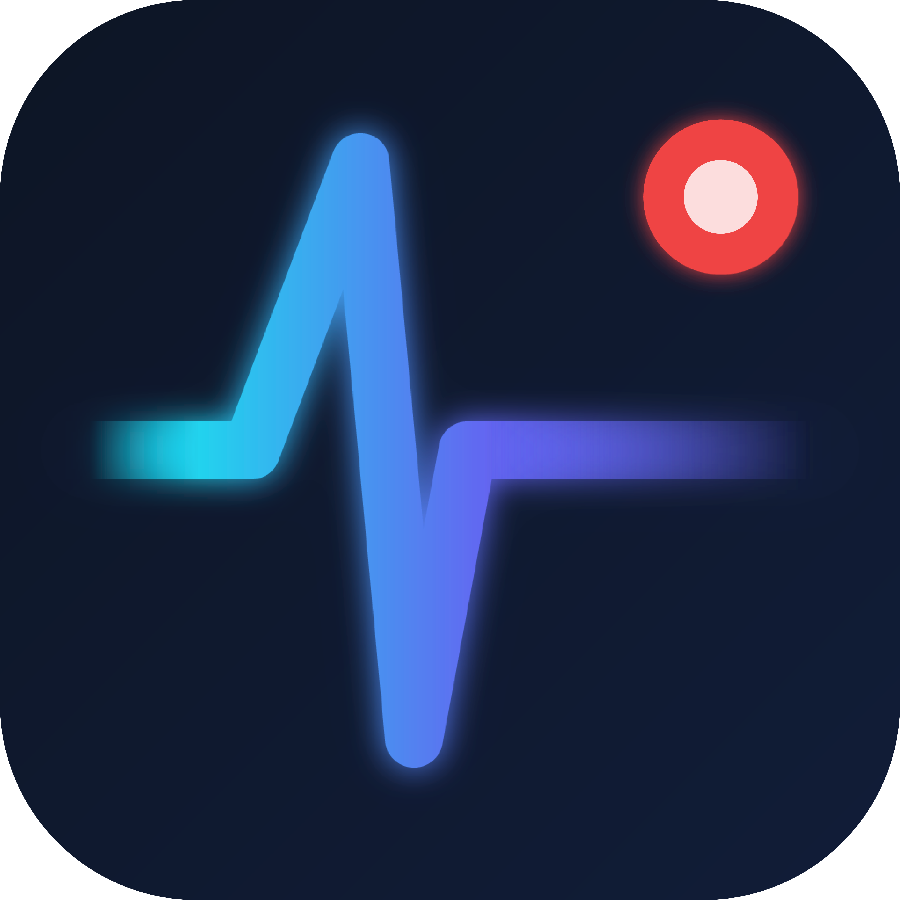
Worship LIVE
masOS 전용 프로그램-
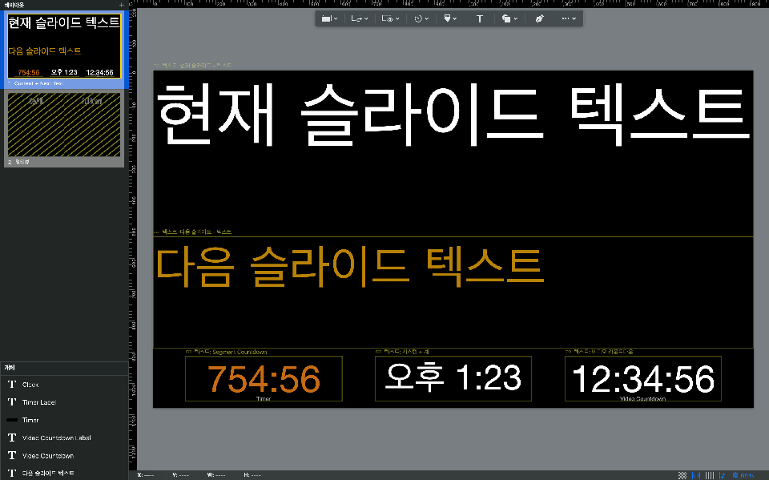
자막 가져오기찬양 가사를 붙여넣고 줄 수만 정하면,슬라이드로 나눠 저장공간에 담아줍니다
-
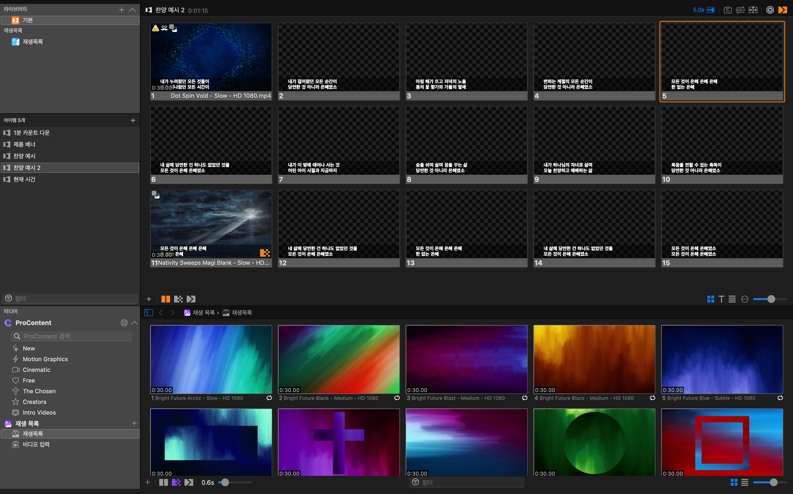
자막분할이미 만든 자막도 블록을 나누고 합치며,슬라이드 나눔을 다시 다듬을 수 있습니다.
-
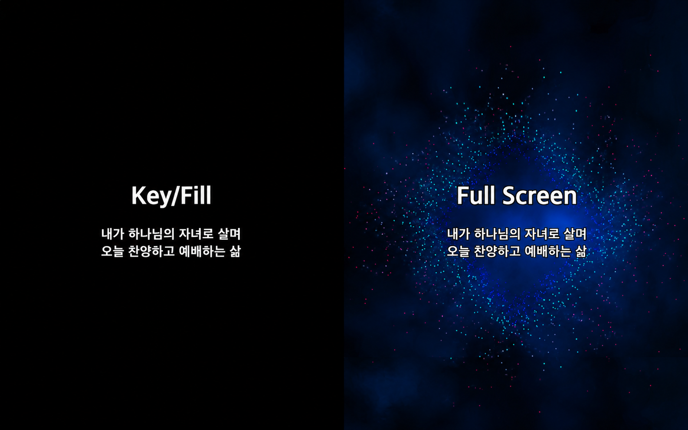
화면 동시 출력예배당 화면, YouTube 화면 등 각각 다른 화면으로 함께 내보냅니다.
-
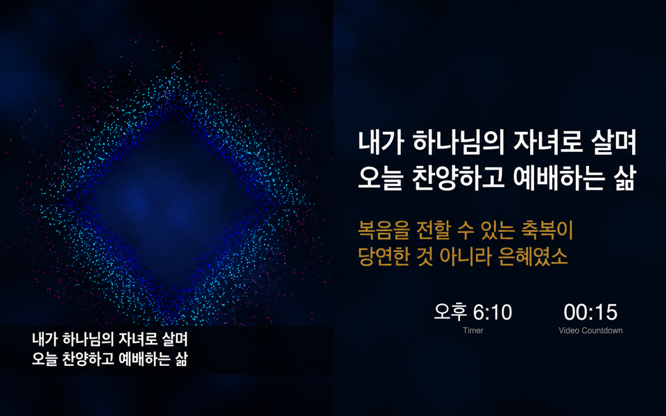
프롬프터설교자와 인도자를 위한 화면을 따로 띄워, 무대에서 편하게 볼 수 있게 합니다.
-
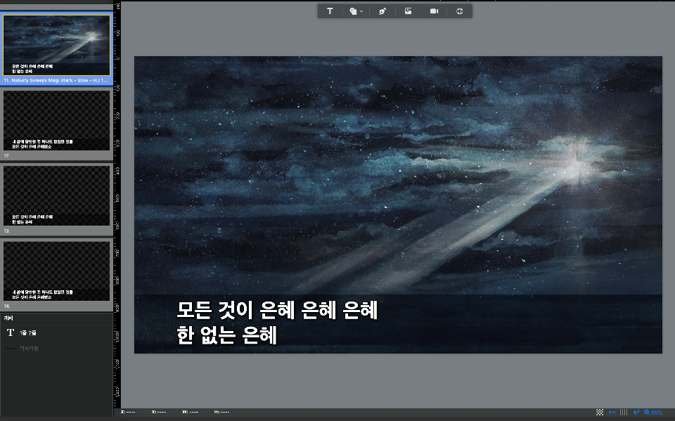
성경 검색'요 3:16'처럼 장·절만 입력하면,그 말씀이 바로 예배 화면 자막이 됩니다.
-
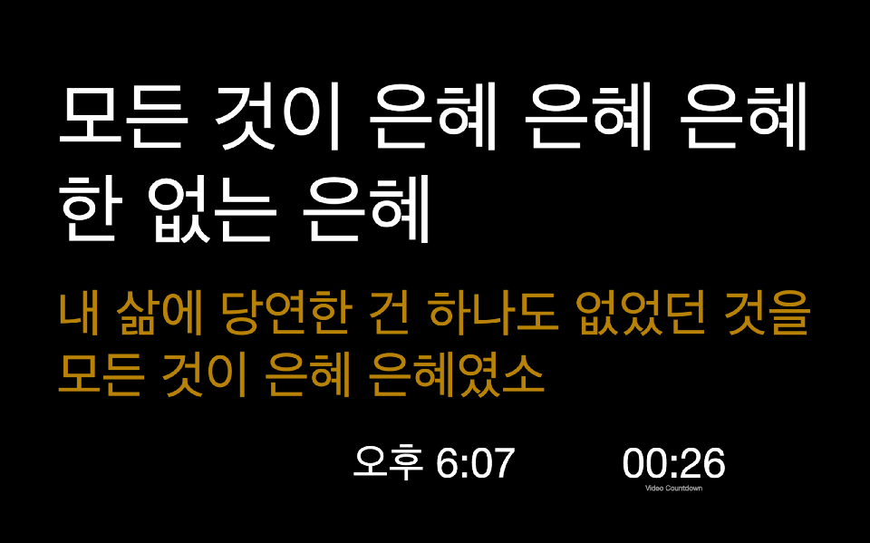
영상 음악 관리영상과 찬양 음악을 폴더로 정리해 두고, 예배 중 필요할 때 바로 틀 수 있습니다.
-
자막 스타일
글꼴·색·위치를 한 번 정해 두면, 모든 슬라이드에 적용할 수 있습니다.
-
영상 자동 변환
맥에서 재생되지 않는 형식의 영상도,가져오면 자동으로 변환해 바로 씁니다.
워십 라이브 패키지로 주일 자막 이번 주부터 절반으로 줄여 보십시오.
ㅣ
교회 예배를 위해 만든 완벽한 자막 출력 프로그램패키지 구성품
교회 규모와 예배 환경에 맞는 맞춤 상담부터 설치, 세팅, 교육, 사후 지원까지 체계적으로 제공하여 안정적인 자막 운영 환경을 지원합니다.-
맥미니 M4
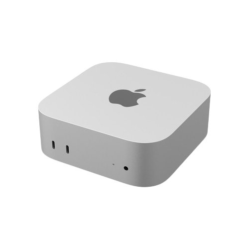
-
덱링크 Duo 2

-
PP-DOCK

-
키보드/마우스
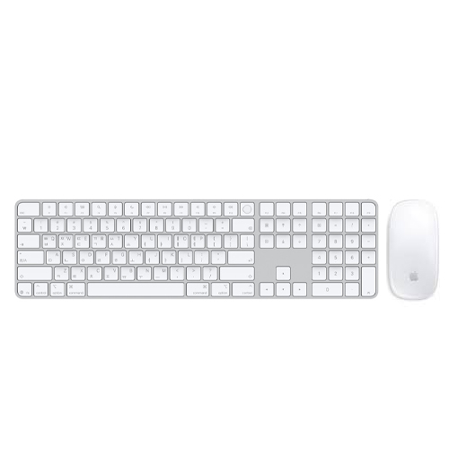
-
27인치 모니터

- 개역개정or새번역
-
SDI 케이블

-
애플케어+

설치 지원 항목
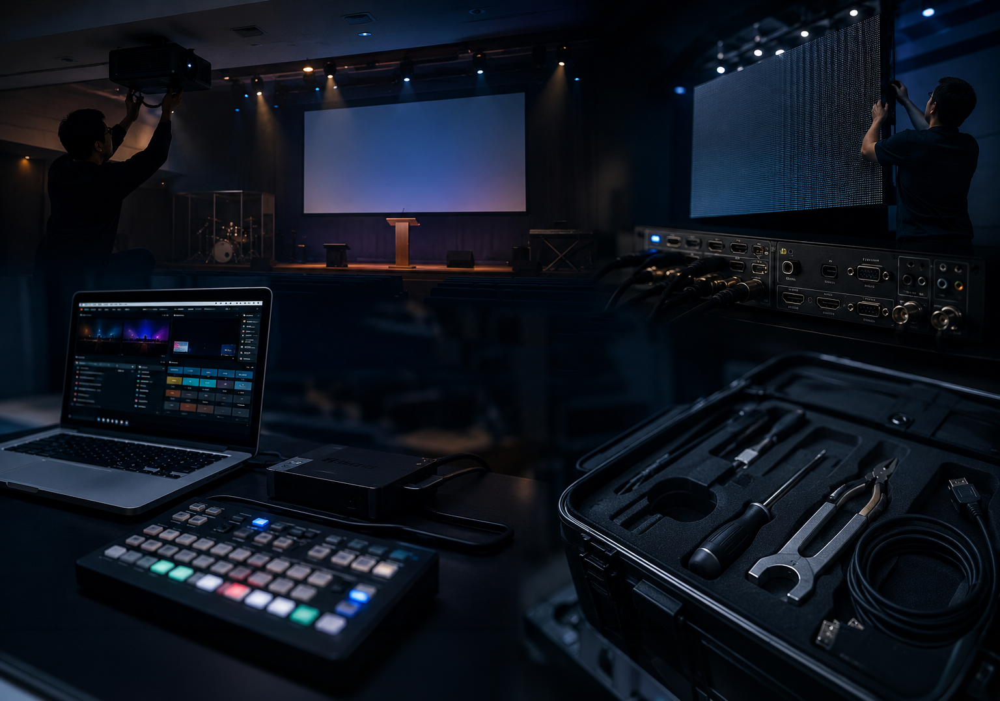
-
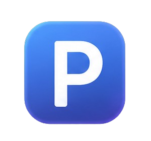
프로그램 설치 - 라이선스 등록
- 화면 출력 설정
- 원격 프로그램 설치
-
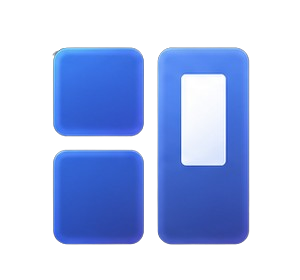
기본 템플릿 구성 - 예배 운영 최적화
운영 교육 제공
처음 사용하는 분들도 쉽게 활용할 수 있도록 교육을 제공합니다. 실제 예배 상황을 기준으로 교육을 진행하여 누구나 쉽게 사용할 수 있습니다.
▶ 교육 내용
- 화면 구성
- 슬라이드 편집
- 미디어 재생
- 편집 방법
- 예배 운용
- 예배 순서
전문 기술 지원 서비스
PC에 원격으로 접속하여 실시간으로 점검 및 문제 해결을 지원해드립니다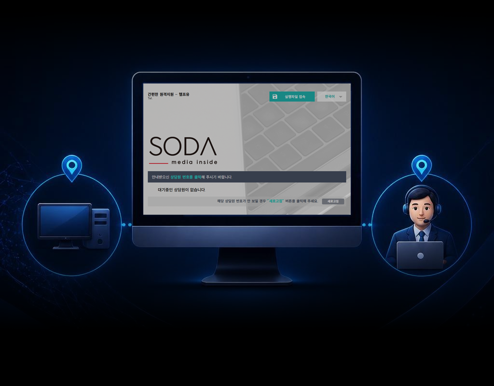
https://helpu.kr/SODAMEDIA
전문 엔지니어 상담사가 무료 원격 지원 서비스를 통해 문제를 신속하게 해결합니다.왜 맥 미니를 함께 구매해야 할까요?
소다미디어에서 맥 미니와 함께 구성된 패키지는 설치부터 설정, 장애 대응까지 신속한 원격 및 기술 지원이 가능합니다.
Mac mini 장점
- 안정적인 macOS 환경
- 신속한 AS 응대
- 장시간 운영에 적합
| 기능 | 타사의 일반 패키지 | 소다미디어 올인원 패키지 |
|---|---|---|
| Mac Mini | 별도 구매 필요 | 포함 올인원 구성 |
| 장비 호환성 | 직접 확인 | 검증 완료 |
| 설치 및 운용 | 장비별 개별 문의 | 통합 지원 |
| A/S 및 기술지원 | 구매처별 개별 문의 | 원스톱으로 빠른 대응 |
구성도
블럭 다이어그램 예시입니다.PP-DOCK은 Mac mini의 출력 한계를 확장하여 다수의 독립 영상 출력을 구성할 수 있으며, 멀티스크린 운영에 최적화된 환경을 제공합니다
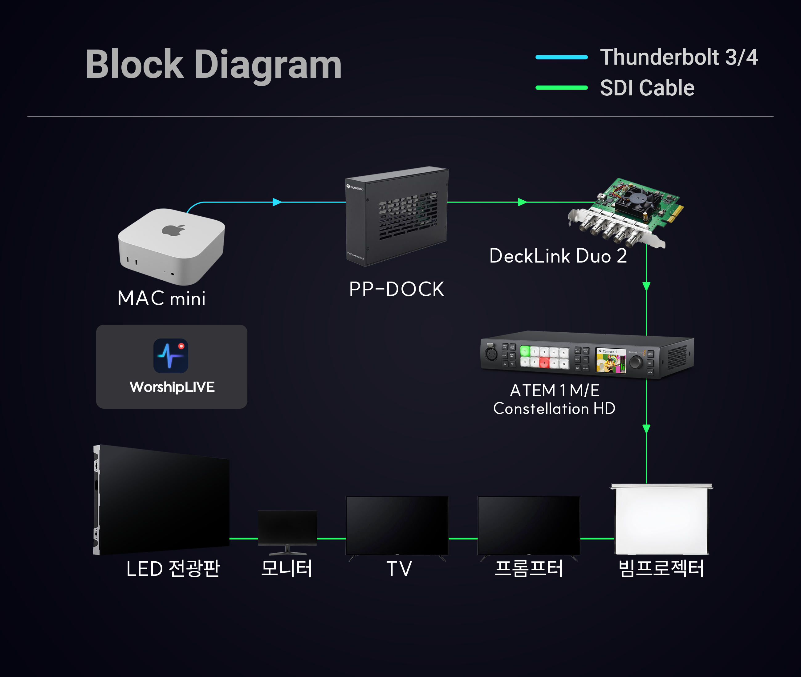
추가상품
-
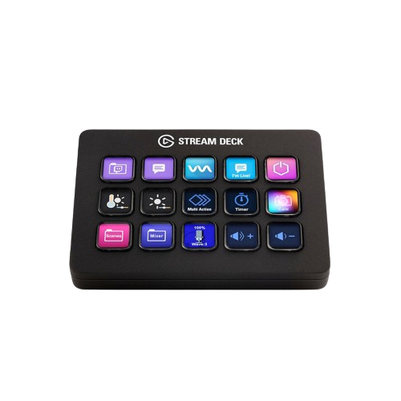
엘가토 스트림덱 MK2
219,000원
210,000원 -
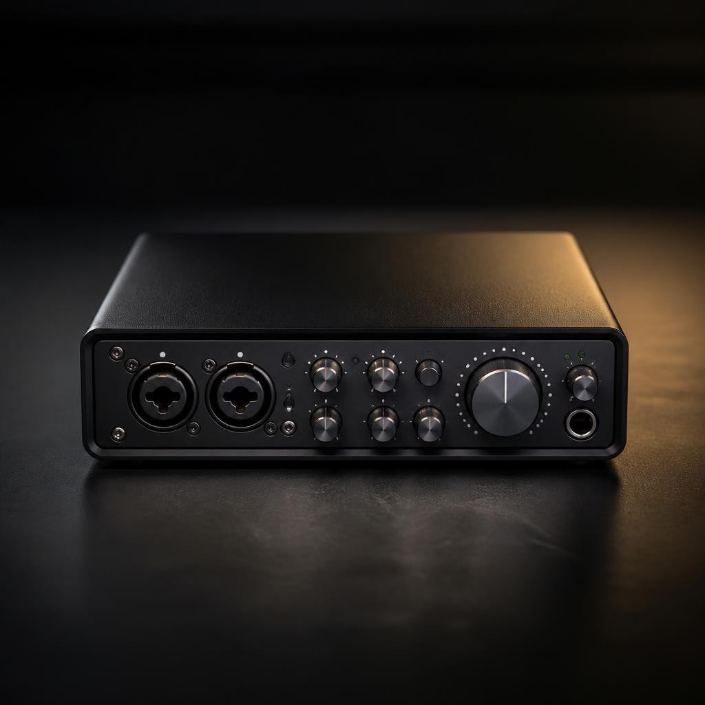
오디오 인터페이스
210,000원
200,000원
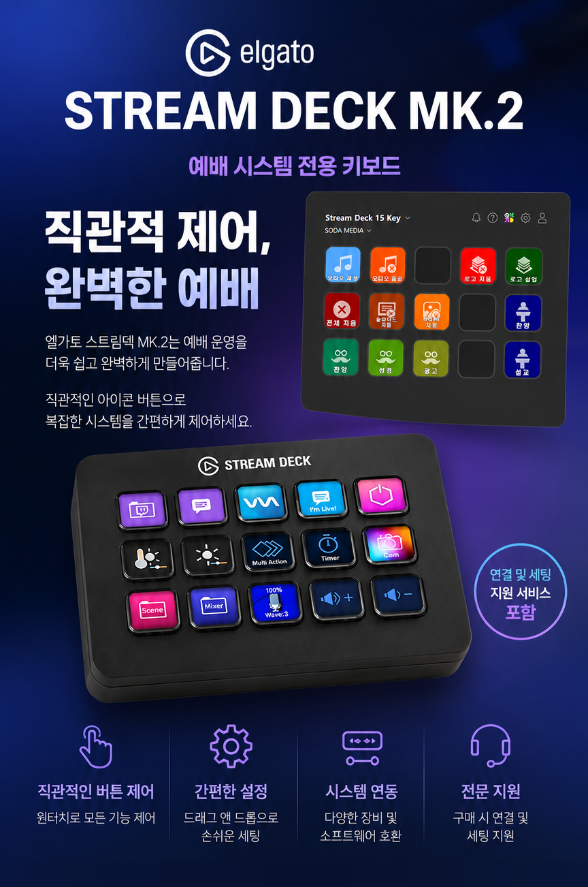
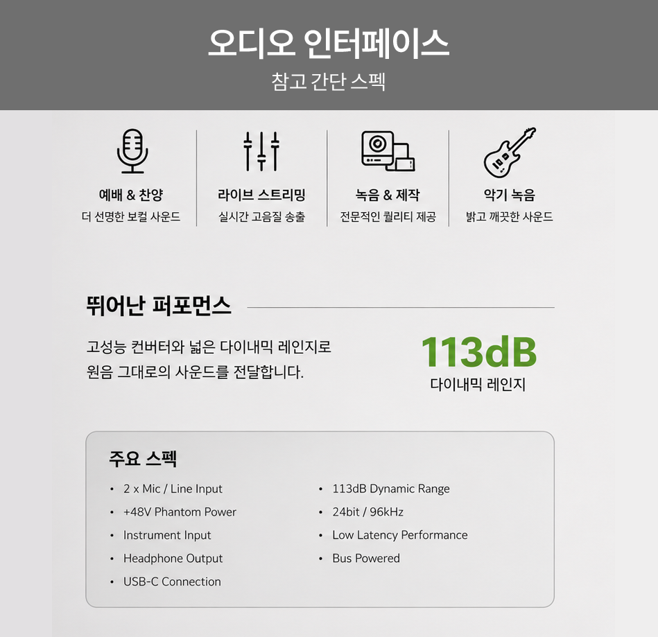
다양한 활용도
교회 예배 자막 운영뿐만 아니라 다양한 환경에서 활용 가능합니다. 종교시설
종교시설 교육기관
교육기관 화상회의
화상회의 방송관련
방송관련 현장중계
현장중계 스튜디오
스튜디오안정적인 사후 관리
소다미디어에서 구매하신 전 제품은 구매일 기준 1년 동안 무상 A/S를 지원해드립니다. (보증 제외 사항: 사용자의 부주의(충격, 침수 등), 임의 분해/개조, 비정상적 사용으로 인한 고장은 유상 수리 대상입니다.)
(보증 제외 사항: 사용자의 부주의(충격, 침수 등), 임의 분해/개조, 비정상적 사용으로 인한 고장은 유상 수리 대상입니다.)
제품 간단 사양
Specification| 제품 | 주요 사양 |
|---|---|
| Mac mini M4 | Apple M4 칩 / 10코어 CPU · 10코어 GPU / 16GB 통합 메모리 / 512GB SSD / Thunderbolt 4 지원 / 운영 PC |
| 애플케어 | AppleCare+ 서비스 / Mac mini M4 보증 연장 / 하드웨어 수리 및 기술 지원 제공 |
| 라이선스 | Worship LIVE 소프트웨어 영구제 / 정기 업데이트 제공 |
| DeckLink Duo 2 | PCIe 영상 입출력 카드 / 3G-SDI 4채널 / 최대 1080p60 지원 / 채널별 입력·출력 설정 가능 / 방송 및 예배 영상 송출용 |
| PP-Dock | Thunderbolt 확장 독킹 스테이션 / DeckLink Duo 2 장착 지원 / Mac mini와 PCIe 장비 연결 / 고속 데이터 전송 지원 |
| 모니터 | 27형 디스플레이 / Full HD / HDMI |
FAQ 자주 묻는 질문
고객님들의 자주 묻는 질문과 답변을 모았습니다.-
Q. 컴퓨터를 변경해도 되나요??
A. 기존 기기에서 비활성화한 뒤 새 기기에서 활성화하시면 정상작동 가능하며 횟수 제한없이 시리얼 1개당 동시 사용은 맥 1대입니다.
-
Q. 예배 중에 인터넷이 끊기면 작동이 안되나요?
A. 예배 진행 자체는 인터넷 없이 동작하며 인터넷은 설치 혹은 활성화할때 90일마다 1회 그리고 웹 편집기 및 클라우드 동기화에만 필요합니다
-
Q. 환불은 어떻게 진행 되나요?
A. 라이선스의 경우에만 해당되며, 활성화 코드를 사용하지 않으셨다면 결제일로부터 7일 이내 전액 환불 가능하며 고객센터로 문의 바랍니다
소다미디어
고객센터 QR 추가
QR 추가